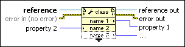

Variable Property Node Function
Owning Palette: Shared Variable Node, VI, and Functions
Requires: Base Development System
Gets (reads) and/or sets (writes) properties of a reference. This node operates the same way as a standard Property Node. However, this node is pre-configured for Variable references.

 Add to the block diagram Add to the block diagram |
 Find on the palette Find on the palette |